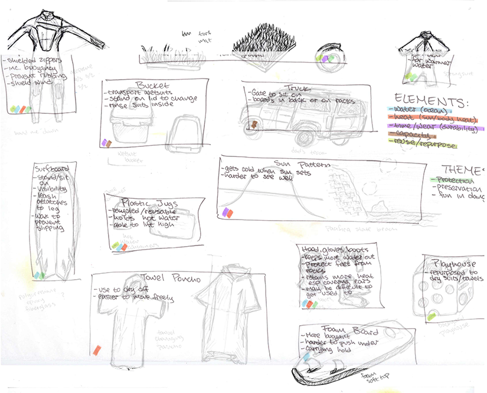
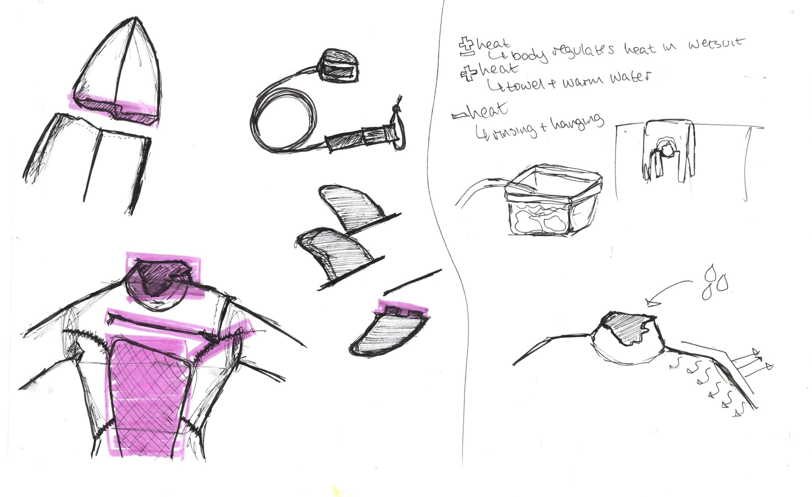
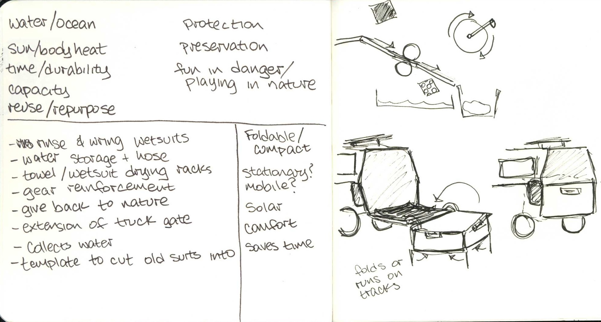
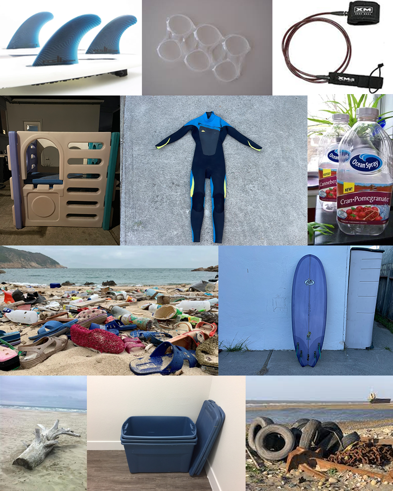
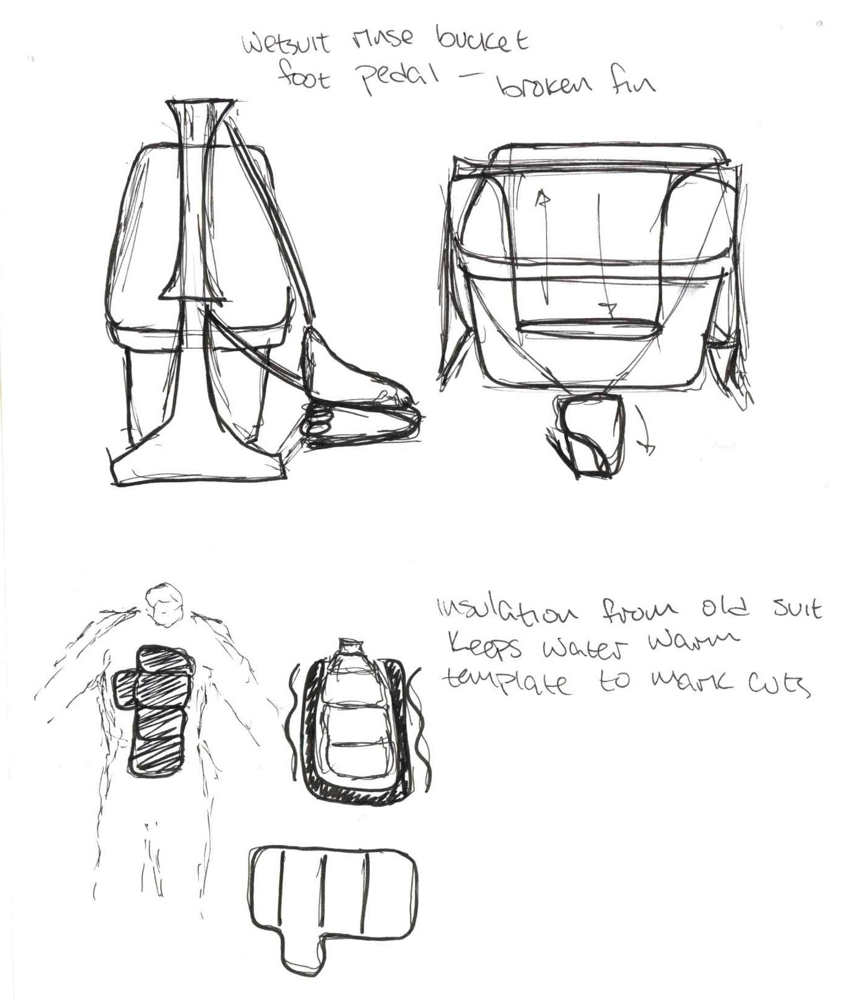

IDEA220

ECOLOGICAL DESIGN
Ritual Objects
My final project centered around the ritual my family performs after surfing in Pacifica, California. The purpose of the ritual is preservation of gear and heat, both also reliant on the other.
The designed objects serve to make the ritual more efficient. This can mean a faster process for a single person or the tools for an assembly line style conduction of the ritual. In construction, the objects would only utilize materials already part of the ritual or beach waste.
Concepts and Sketches


I began my concept map by creating sketches of the important objects used in my ritual then categorized them into groups.
Elements:
- Water
- Heat
- Durability
- Capacity
- Repurpose
Themes:
- Protection
- Preservation
- Fun in danger


I ultimately selected three processes to focus on that are integral to my family's surfing day ritual:
- Rinsing off our bodies at the beach using hot water jugs brought from home
- Rinsing off our wetsuits in our backyard by dunking them in water from the hose
- Wringing out the excess water from the wetsuits and hanging them to dry on the playhouse